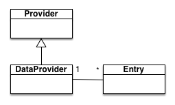

Images
Syntax is:

alt_textis required and is the "alt" attribute of the<img>tag.Titleis optional and is the "title" attribute of the<img>tag.image_linkis the link to the image file.
Local images
Link to local image file can be:
- the file name unique in all the documentation directories:
unique_name.png. - relative file name from the current directory:
img/name.png. - absolute file name (starting with /) from the root documentation directory:
/data/img/name.png

Example:

External images
Absolute link:
`

`
Example: